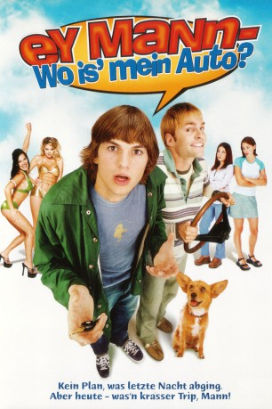

#5551 Ey Mann, wo is' mein Auto?
Alternativ: Dude, Where's My Car?
 
 IMDB-Wertung: 5.5 / 10
IMDB-Wertung: 5.5 / 10  Metascore: 0
Metascore: 0 
Nach einer ausschweifenden Nacht erwachen Jesse und Chester mit einem absoluten Blackout. Sie können sich noch nicht einmal erinnern, wo ihr Auto abgeblieben ist. Zu dumm, denn gerade darin liegen Geschenke, mit denen sie ihre Freundinnen besänftigen könnten, denen sie Tags zuvor das Haus verwüsteten. Eine irrwitzige Suche beginnt, bei der die beiden nicht nur von heißen Spacegirls, abgedrehten Weltraumfreaks und schwedischen Bodybuildern bedroht werden. Obendrein hat es auch noch eine hinterlistige Straußenherde auf sie abgesehen ...
Jahr: 2000
Dauer: 83 Minuten
FSK: 12
Land: USA Studio: 20th Century Fox Home EntertainmentTonspuren: DD5.1 - ,
Untertitel:
Auflösung: 1080p (1920x1040) Größe: 8366 MB
Genre: Sci-Fi, Komödie, Mystery
Regisseur: Danny Leiner
Drehbuch: Zhenyun Liu
Soundtrack:
Darsteller:
 Ashton Kutcher als Jesse Montgomery III
Ashton Kutcher als Jesse Montgomery III Seann William Scott als Chester Greenburg
Seann William Scott als Chester Greenburg Jennifer Garner als Wanda
Jennifer Garner als Wanda- Marla Sokoloff als Wilma
 Kristy Swanson als Christie Boner
Kristy Swanson als Christie Boner David Herman als Nelson
David Herman als Nelson- Hal Sparks als Zoltan - Cult Leader
- Charlie O'Connell als Tommy
- Christian Middelthon als Alien Nordic Dude #1
- Dave Bannick als Alien Nordic Dude #2
- Bob Clendenin als Zarnoff - Cult Member
 Mary Lynn Rajskub als Zelmina - Cult Member
Mary Lynn Rajskub als Zelmina - Cult Member- Kevin Christy als Zellner - Cult Member
 Kristoffer Ryan Winters als Zilbor - Cult Member
Kristoffer Ryan Winters als Zilbor - Cult Member- Bill Chott als Big Cult Guard #1
- Michael Bower als Big Cult Guard #2
- Teressa Tunney als Tania
 Freda Foh Shen als Chinese Foooood Lady
Freda Foh Shen als Chinese Foooood Lady- Mitzi Martin als Alien Jumpsuit Chick #1
 Nichole Hiltz als Alien Jumpsuit Chick #2
Nichole Hiltz als Alien Jumpsuit Chick #2- Linda Kim als Alien Jumpsuit Chick #3
- Kimmarie Johnson als Alien Jumpsuit Chick #5
- Keone Young als Mr. Lee, The Chinese Tailor
 Christopher Darga als Interrogation Cop
Christopher Darga als Interrogation Cop- Pat Finn als Officer Rick
 Cleo King als Penny the Impound Officer
Cleo King als Penny the Impound Officer- Brendan Hill als Boy with Bat
- Jodi Ann Paterson als Super Hot Giant Alien
- Dwight Armstrong als Space-A-Rama Employee
- Claudine Barros als Patty
- Richard Johnson als Birthday Father
- Joanna Bacalso als Bartender
- Tabitha Taylor als Dancer #1
- Cheryl Tsai als Dancer #8
- Erik Aude als Musclehead
 Fabio als Fabio
Fabio als Fabio- Michael Beardsley als Cult Member , uncredited
- Dominic Capone als Mr. Pizzacoli Jr. , uncredited
 Andy Dick als Mark , uncredited
Andy Dick als Mark , uncredited- Joyce Giraud als Fabio's Girlfriend , uncredited
- Joe Gonzales als Cult Member , uncredited
 Geoffrey Gould als Cult Member , uncredited
Geoffrey Gould als Cult Member , uncredited Gary Rodriguez als Police Officer , uncredited
Gary Rodriguez als Police Officer , uncredited Brent Spiner als Pierre , uncredited
Brent Spiner als Pierre , uncredited- Banzai Vitale als Zabu - Cult Member , uncredited
 Michael Shamus Wiles als Interrogation Detective , uncredited
Michael Shamus Wiles als Interrogation Detective , uncredited- John Toles-Bey als Mr. Pizzacoli
- Turtle als Jeff - Cult Member
- John Melendez als Gene
- Linda Porter als Mrs. Crabbleman
Datei: X:\2000\Ey Mann, wo is' mein Auto (2000, FSK12, 1920x1040).mkv seit 15.02.2017
Festplatte: HD 1996-2002
 Es gibt insgesamt 82 Filme in der Gruppe '2000'
Es gibt insgesamt 82 Filme in der Gruppe '2000'